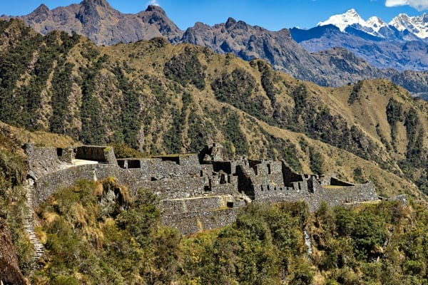

A cliff-edge Inca complex on Day 3 whose name is often glossed “inaccessible town.” Steep stairs, exposure, and some of the trail’s best drama.

Sayacmarca (also Sayaqmarca / Sayaqmarka) is one of the most dramatically sited ruins on the classic Inca Trail. The Quechua name is commonly glossed as “inaccessible town” or a steep-place town — a fair description once you see the promontory, cliff drops, and single steep approach.
Our tour data places the stop near 11,852 ft (3,612 m). Popular guides often round the complex to about 3,600 m. It sits on Day 3, after the Runkurakay sector and before the Phuyupatamarca / cloud-forest descent toward Camp 3.
The site occupies a narrow mountain crest with exposure on multiple sides. Entry is typically via a steep stone staircase cut into the hillside (trek write-ups often mention on the order of ~90–100 steps — treat exact counts as popular figures, not a lab measurement). Inside, corridors and terraces thread between buildings with serious drop-offs beyond the walls.
Function is interpreted variously (checkpoint, administrative outpost, agricultural support). Without a primary excavation citation on hand, we describe what hikers can observe and how the site sits in the trail sequence rather than inventing a single official purpose.
#sayaqmarca (note spelling variant vs the URL slug sayacmarca).
Trail placement and “inaccessible” naming are consistent across operator and general Inca Trail references. Building-by-building interpretation varies; this page stays conservative on archaeology.
Our interactive Mapbox tour follows GPS collected on the classic Inca Trail — fly through this stop and the full route to Machu Picchu.